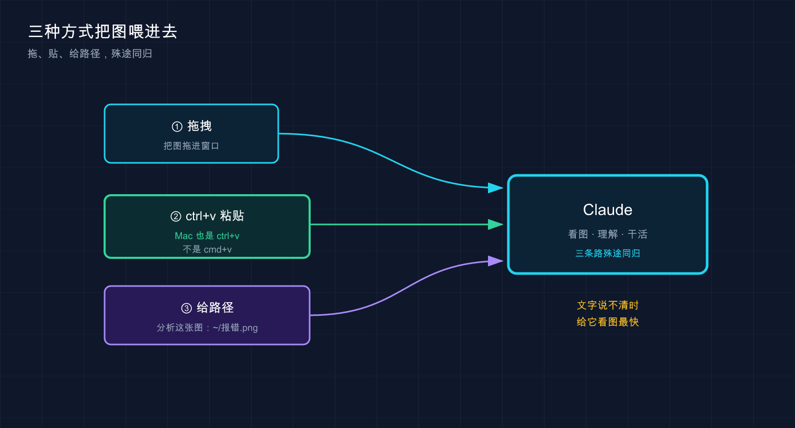

📚 系列导航：上一篇 16 常见工作流 把读代码、修 bug、写测试这些日常套路过了一遍。这一篇加一个新维度——不光能跟它打字，还能直接给它看图：报错截图、设计稿、架构图，丢进去它就懂。
比如要把一张设计师给的页面截图还原成网页。搁以前，咱们得对着图一个像素一个像素量——这块间距多少、字号几号、按钮圆角几度，光抠数值就得磨一上午。
这时候只要把那张 PNG 直接拖进 Claude Code 的窗口，敲一句「照着这张设计稿生成对应的 CSS」。
几分钟后，它吐出来一整段 CSS——布局、配色、圆角、阴影全对上了，贴进项目里，浏览器一刷新，和设计稿几乎一模一样。效率差距一下就出来了：给它看比跟它讲快得多。
说白了，一图胜千言这句话，在 Claude Code 这儿是字面意义上成立的。今天就把「怎么喂图 + 喂图能干嘛」讲透。
看完这一篇，你会拿到：
- 三种把图片塞进 Claude Code 的方法，照着做就行（含一个 Mac 用户必踩的快捷键坑）
- 图片的三大正经用途：贴报错截图、还原设计稿、读图表 / 架构图
- 一个判断标准：什么时候该上图、什么时候打字就够
- 多图怎么用、Claude 怎么引用图片、怎么一键点开它说的那张
01 为什么要给它看图，而不是只打字
先说结论：当一件事「描述起来比截图还费劲」的时候，就该上图了。
这是官方文档里白纸黑字的判断标准——「当文本描述不清楚或繁琐时使用图像」。
类比：一图胜千言。 你跟朋友形容一个红绿报错弹窗长啥样，说半天「左上角有个红叉，下面一行小字，右边还有个按钮……」对方还是云里雾里；但你截个图甩过去，他「哦」一声就全明白了。给 Claude 看图，是同一个道理——省下你组织语言的力气，也省下它猜的力气。
哪些场景特别适合上图？用下来主要是这三类：
| 场景 | 打字描述有多累 | 上图有多省 |
|---|---|---|
| 页面错位 / 样式不对 | 「这个 div 往右偏了大概二十几像素，还跟下面那块重叠了」 | 截个图，它一眼看到错位 |
| 报错弹窗 / 控制台红字 | 把一长串堆栈手敲或复制对齐 | 截图甩进去，连上下文一起给了 |
| 还原设计稿 / 仿一个组件 | 「主色是个偏紫的蓝，圆角不大不小……」 | 给图，让它自己量 |
这里有个关键区别得拎清楚：Claude Code 看的是「图里的内容」，不是帮你截图。截图这一步还得你自己来（系统自带的截图工具就行），它负责的是「看懂你给的图」。
💡 一句话总结：判断标准就一句——描述起来比截图还累，就上图；官方原话叫「文本不清楚或繁琐时用图像」。
02 三种喂图方式：拖、贴、给路径
怎么把图塞进去？官方文档给了三种方法，任选一种，效果一样。我按「上手难度从低到高」排一下。

这张图把三条加图路径并到一处：拖拽进窗口、复制后 ctrl+v 粘贴（Mac 也是 ctrl+v）、或直接给文件路径——三种方式殊途同归，都是把图喂给 Claude 让它「看着干活」。
方法一：直接拖进窗口（最直觉）
把图片文件从访达 / 文件管理器里拖进正在运行 Claude Code 的终端窗口，松手，它就进去了。
这是最不用动脑的方式——跟你往微信聊天框拖文件发图一个感觉。新手一般先从这个上手，零学习成本。
方法二：复制图片，ctrl+v 粘贴（最高频，但有个坑）
很多时候图根本没存成文件——你刚截了个屏，或者从网页上右键「复制图片」，这时候直接粘贴最爽。
但这里有全篇最大的一个坑，官方文档专门强调了：
复制图像并使用 ctrl+v 将其粘贴到 CLI 中（不要使用 cmd+v）。
注意：Mac 上粘贴图片也用 ctrl+v，不是你习惯的 cmd+v。
这点反直觉到什么程度？Mac 用户复制粘贴文字十年了都是 cmd+v，肌肉记忆根深蒂固。第一次贴截图，很容易习惯性按 cmd+v，结果终端里冒出来一长串乱码路径，图根本没进去，还以为是不支持。翻一翻文档就明白了——很多终端里 cmd+v 粘的是文件路径文本，只有 ctrl+v 才稳稳把图片本身喂给 Claude。
（补一句：个别终端比如 iTerm2 也认 cmd+v 粘图，但各终端行为不一致，ctrl+v 是哪儿都好使的那条路，记它就不踩坑。）
记死这一条：
| 平台 | 粘贴图片用 | 别用 |
|---|---|---|
| Mac | ctrl+v |
❌ cmd+v（多数终端会粘成路径文本） |
| Windows / Linux | ctrl+v（WSL 中若终端拦截 ctrl+v，改用 alt+v） |
—— |
一个小细节：粘贴成功后，输入框里会出现一个 [Image #1] 的占位标记（官方叫「芯片（chip）」），表示图已经挂上了，你可以在这条提示里接着打字。
方法三：直接给图片路径（最适合脚本 / 已存好的图）
如果图已经存成文件了，路径你也知道，那最干脆的办法是在提示里直接把路径打出来，让它自己去读：
Analyze this image: /path/to/your/image.png
把 /path/to/your/image.png 换成你那张图的真实路径就行（相对路径、绝对路径都认）。这种方式不依赖鼠标拖拽，写在脚本里、或者图片藏在项目某个目录深处时，最好用。
💡 一句话总结：拖进窗口 /
ctrl+v粘贴 / 直接给路径，三选一；Mac 用户死记ctrl+v，别按cmd+v。
03 用途一：贴报错和 UI 截图，给它「现场」
第一个最实用的场景——把出问题的截图甩给它，让它看着现场断案。
为什么这招好用？因为很多报错和样式问题，文字根本传达不全。一个报错弹窗里有图标、有颜色、有排版，你手敲只能描述个大概；UI 错位更是如此，差几个像素肉眼能看出来，嘴说不清。
类比：去医院别光靠嘴描述「这儿疼」，拍张片子给医生。 你说「肚子右下角隐隐作痛」，医生只能猜；一张 CT 片摆上去，问题在哪一目了然。截图就是给 Claude 的那张「片子」。
具体怎么做？把截图喂进去（三种方法任选），然后配一句话点出你的诉求。官方给的示范提示就很到位：
Here's a screenshot of the error. What's causing it?
或者，UI 上的问题：
Describe the UI elements in this screenshot
比如调一个 React 页面，有个按钮死活偏右，CSS 翻来覆去看不出毛病。这时候直接截了张错位的图丢进去，配一句「这个按钮为什么往右挤了」，Claude 一看就说「你父容器有个 padding-right，加上按钮自己的 margin，叠一块了」——一句话点破，对着改一行就好了。要是靠打字描述这个错位，怕是得来回拉扯好几轮。
💡 一句话总结：报错和 UI 问题，截图就是「现场照片」——给它看比给它讲，断案快得多。
04 用途二：还原设计稿，截图直接出代码
这就是开头那个「效率差距一下拉开」的场景，单独拎出来讲——给它一张设计稿，让它吐出能跑的代码。
为什么这招最惊艳？因为它把「设计→代码」这段最磨人的体力活给省了。对着图量数值、调间距、试配色，原本是前端最枯燥的一环，现在丢给它先出个八九不离十的版本，你再微调。
类比：拿张照片让裁缝照着做衣服。 你不用把每条尺寸都报给裁缝，把样衣照片往他面前一放，他自己就能量出版型、用料、走线。设计稿截图之于 Claude，就是那张「样衣照片」。
官方给的示范提示，记住这两句就够开工：
照着这张设计稿生成对应的 CSS
What HTML structure would recreate this component?
第一句让它照着设计稿生成 CSS，第二句让它推断出能复刻这个组件的 HTML 结构。两句连用，一个静态组件的骨架就出来了。
说句实话，得有个合理预期：它不是像素级复刻，是给你一个高完成度的起点。像开头那段 CSS，整体布局和配色全对，但有两个地方的内边距差了几像素，手动调一下就行。可这已经省了至少一小时——从零写 CSS，和改它给的八成稿，完全是两个工作量。
| 还原设计稿 | ❌ 纯手写 | ✅ 截图喂给它 |
|---|---|---|
| 量数值 | 自己一个个抠像素 | 它照着图估 |
| 出骨架 | 从空文件敲起 | 直接给一版能跑的 |
| 你的活 | 全程从零 | 改最后那一两成 |
💡 一句话总结：设计稿截图 +「照着这张设计稿生成对应的 CSS」，它给你八成稿，你补最后两成，省下的全是体力活。
05 用途三：读图表和架构图，让它「看懂结构」
第三个用途，图表、数据库 schema、架构图——这些「结构性」的图，它也能看懂。
为什么单列一类？因为前两类（报错、设计稿）图里是「界面」，这类图里是「关系」——谁连谁、数据怎么流、模块怎么分层。这种关系用文字串起来特别绕，用图一目了然，正好是 Claude 的菜。
类比：给新同事讲系统，白板上画个框图比讲半天管用。 你跟新人口述「用户服务调订单服务，订单服务又依赖库存和支付……」，他听得云里雾里；白板上几个框一连，箭头一画，他立马懂了。把这张框图截给 Claude，效果一样。
官方给的示范提示，覆盖了「读」和「改」两个方向：
This is our current database schema. How should we modify it for the new feature?
Are there any problematic elements in this diagram?
第一句是拿着现有的数据库结构图，问它新功能该怎么改表；第二句是让它审一审这张图里有没有不合理的地方。
一个很常见的用法：接手一个陌生项目，对方甩来一张架构图 PNG，直接喂给 Claude，让它先讲讲这套系统大概怎么跑。它能从图里读出模块和调用关系，给你一段概览——比自己对着图干瞪眼快多了，相当于有人先带你把图捋了一遍。
💡 一句话总结：图表、schema、架构图这类「讲关系」的图，喂给它当背景，让它读懂结构再帮你改或审。
06 多图、引用、一键点开：几个好用的小操作
最后补几个让你用得更顺的细节，都是官方文档里提到的。
一次可以喂多张图
不用一张张来——同一条提示里可以塞多张图。比如「这是旧设计稿、这是新设计稿，告诉我改了哪些地方」，两张一起给，让它对比。设计稿改版时常这么干，省得来回切换描述。
Claude 怎么引用图片：[Image #1]
当 Claude 在回复里提到你给的某张图时，它会用 [Image #1]、[Image #2] 这样的编号来指代——第几张图就是几号。多图的时候，这个编号让你一眼对上「它说的是哪张」。
一键点开它说的那张图
它回复里出现的 [Image #N] 是可以点开的，按官方说法：
当 Claude 引用图像时（例如
[Image #1]），Cmd+Click（Mac）或Ctrl+Click（Windows/Linux）链接以在默认查看器中打开图像。
也就是说，想确认它指的到底是哪张，Mac 上 Cmd+Click、Windows/Linux 上 Ctrl+Click 那个编号，系统默认看图工具就帮你把图打开了。
| 操作 | Mac | Windows / Linux |
|---|---|---|
| 粘贴图片 | ctrl+v |
ctrl+v |
点开 [Image #N] |
Cmd+Click |
Ctrl+Click |
注意这俩快捷键的「分工」是反的：粘贴图片用 ctrl，点开图片链接 Mac 上却用 Cmd。别记混了。
💡 一句话总结：一条提示能塞多张图，Claude 用
[Image #N]指代，点那个编号（Mac 是Cmd+Click）就能把图打开核对。
07 动手：拖一张图让它读，三步跑通
光说不练假把式。下面用一张你电脑上随便一张图，三步跑通「喂图 → 它读懂」的完整流程。不需要任何项目，桌面上有张图就行。
第一步：随便找一张图，记住它的位置
截个屏，或者随便找张已有的 PNG / JPG。Mac 截屏默认存桌面，文件名形如 截屏2026-06-10 下午3.20.15.png。把它拖到一个好打的路径，比如直接放桌面就行。
第二步：在任意目录启动 Claude Code
claude
预期：出现欢迎屏幕，底部有输入框。（读图不挑目录，随便在哪启动都行。）
第三步：把图喂进去，让它描述
三种方式任选，新手推荐直接拖：把那张图从桌面拖进终端窗口，松手，输入框里会出现 [Image #1] 标记。然后接着打字：
这张图里是什么？用中文描述一下你看到的内容
回车。
预期：Claude 读取这张图，用中文告诉你图里有啥——是张截图就说界面元素，是张照片就描述画面内容。看到它准确说出了图里的东西 = 喂图成功，全流程跑通。
⚠️ Mac 用户想试「复制粘贴」那条路：先在预览 / 浏览器里复制图片，回到终端按 ctrl+v（不是 cmd+v）。要是按完冒出来一串文件路径文本而不是 [Image #N] 标记，八成是手贱按成 cmd+v 了，删掉重来。
💡 一句话总结：拖进去 /
ctrl+v/ 给路径，三步喂图，看到 Claude 准确描述图里内容即为跑通。
08 小结
这一篇你学会了给 Claude Code 开「视觉」这一路——从只能打字，到能直接给它看图。
把要点串一遍：
| 维度 | 关键点 |
|---|---|
| 怎么喂 | 拖进窗口 / ctrl+v 粘贴 / 给路径，三选一 |
| 最大的坑 | Mac 粘贴图用 ctrl+v，别按 cmd+v |
| 三大用途 | 报错 / UI 截图给现场、还原设计稿出代码、读图表 / 架构图懂结构 |
| 何时上图 | 文字描述比截图还累的时候 |
| 多图与引用 | 一条提示塞多张，Claude 用 [Image #N] 指代，点编号可打开 |
你现在应该能： 把任意一张截图、设计稿或架构图喂给 Claude Code，让它看着图帮你断报错、出代码、捋结构；并且记住了 Mac 上那个最反直觉的 ctrl+v。这套「给它看」的能力，会让你之后描述问题的成本直线下降——很多以前要打半天字的需求，现在一张图加一句话就解决了。
下一篇 18「CLAUDE.md 使用指南」——前面咱们一直在喂图、喂需求，但每次都得重复交代项目背景。有没有办法让 Claude 一进项目就自动知道这是个啥、该守哪些规矩？下一篇就讲那个给它的「入职手册」——CLAUDE.md，配好了它就再也不用你反复念叨了。